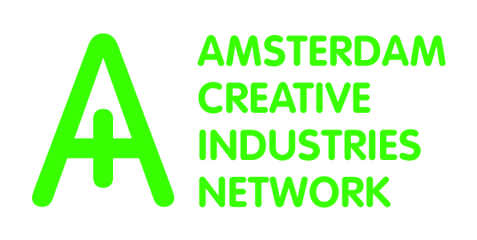
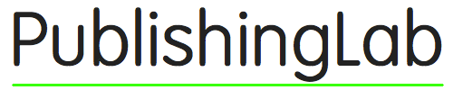
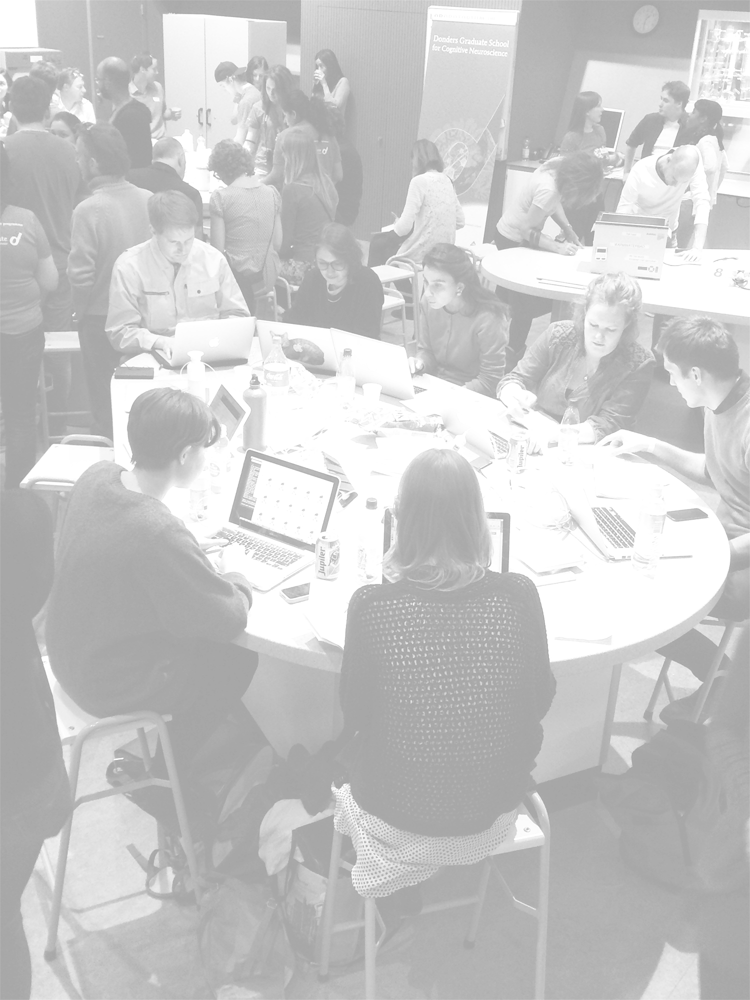
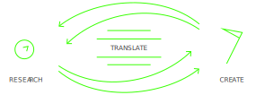
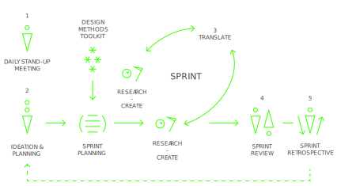
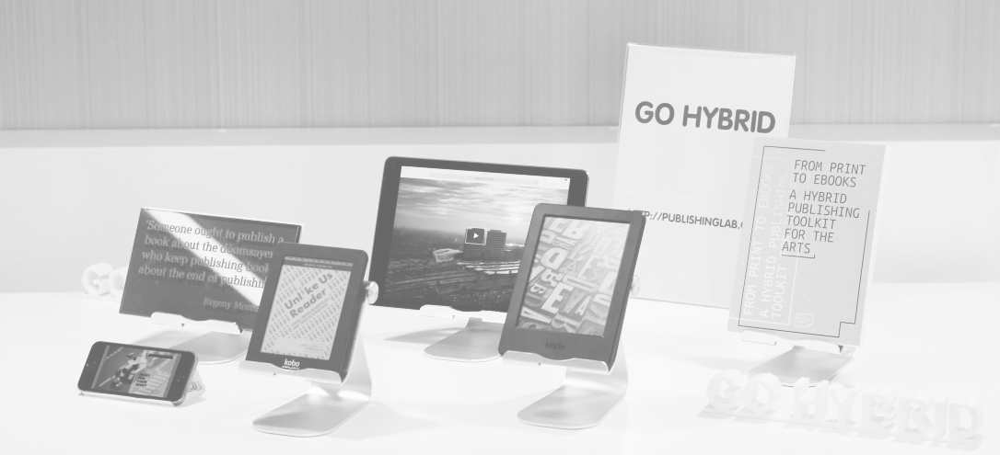
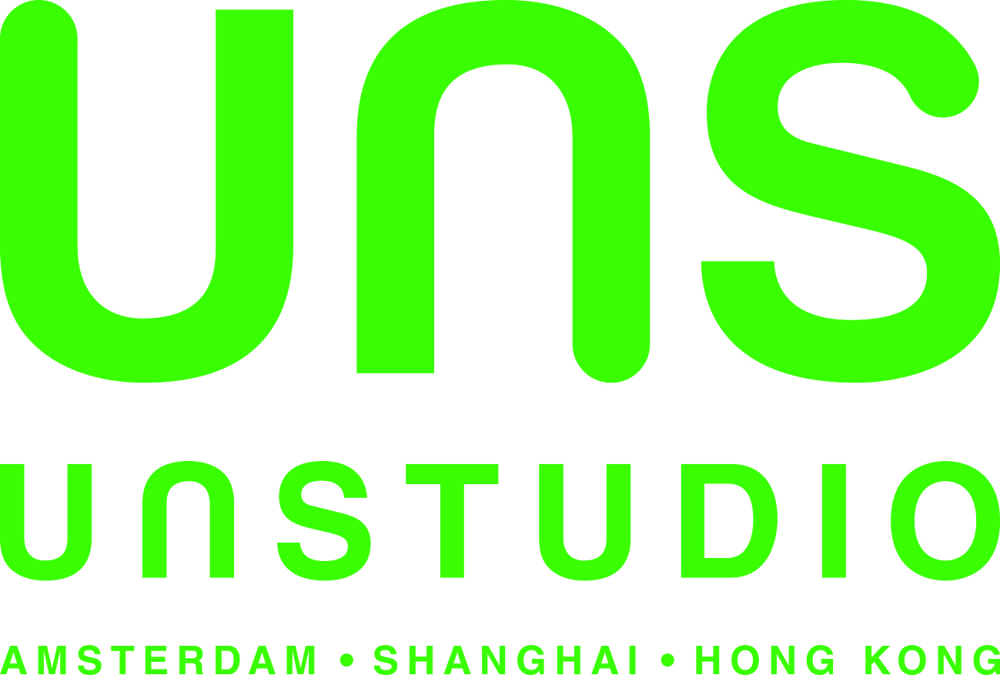
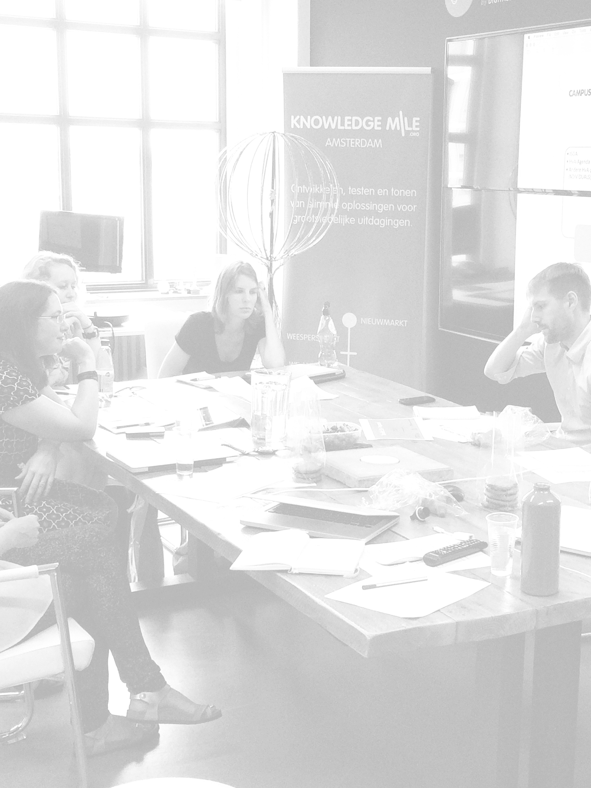

Sept 2, Friday

PublishingLab manual, Semester 2016-2017
Publisher: PublishingLab, Amsterdam
Supported by: Amsterdam Creative Industries Network
Contact:
PublishingLab
Amsterdam University of Applied Sciences
Room: 04A07
Rhijnspoorplein 1
1091 GC Amsterdam
The Netherlands
http://publishinglab.org
An EPUB and PDF edition of this publication are freely downloadable from: http://publishing.org/publications/
This publication is licensed under Creative Commons Attribution NonCommercial ShareAlike 4.0 Unported (CC BY-NC-SA 4.0). To view a copy of this license, visit http://creativecommons.org/licenses/by-nc-sa/4.0/.
Amsterdam, 2016
 

Welcome to the PublishingLab, this section tells you a bit about who we are, who our interns are and who our partners are. You will also find an overview of what we do.
The PublishingLab is an applied research lab in the field of hybrid publishing working at the intersection of publishing and digital technology, both in print and on screen. We are part of the Amsterdam Creative Industries Network (ACIN) and the Amsterdam University of Applied Sciences. The world of digital publishing has been growing steadily for several years. The arrival of tablets and smartphones has accelerated these developments, and today it is impossible to imagine a media landscape without e-books, newspaper apps, and digital magazines. Digitalization is turning the field upside down! This is where the PublishingLab comes in.
The PublishingLab is part of ACIN, the national talent, knowledge and business network for creative industry and digital technology. ACIN was founded by the Amsterdam University of Applied Sciences, the Amsterdam School of the Arts and Inholland University of Applied Sciences. ACIN currently hosts eleven other labs such as Art&Technology lab, Fashion&Technology lab, Gamelab, etc. PublishingLab is based in Benno Premselahuis, at the School of Design & Communication from the Amsterdam University of Applied Sciences. Students, teachers and researchers work together on applied research with the creative industries and the ICT sector. The results will be used in curriculum development and consulting the industry. Together with the Institute of Network Cultures (INC), PublishingLab is located on the Amstelcampus Amsterdam.
PublishingLab works with students from different backgrounds, offering a wide range of opportunities to its students – from experimenting with digital publishing workflows to testing user interface design. We like to work with students who don’t give up easily; who like experimenting with text, typography, code, (moving) images and the opportunities that digital media provide. We work with students with design, hacking, writing and many other skills; the teams are multidisciplinary and selected to fit the needs of the project. We’re looking for motivated people who respond to opportunities and challenges intelligently, creatively and want to push the boundaries of hybrid publishing.
PublishingLab works with various partners, ranging from government institutions, Dutch SMEs, and large international corporations in the field of digital media and publishing. Our projects are always shaped in co-creation with our partners. Working with partners means the PublishingLab has a good network in Amsterdam's creative industries. Recent partners include De Persgroep Nederland, De Persgroep Digitaal, WeekbladpersGroep, UNStudio, Canon, Cinekid, Hogeschool Bibliotheek Amsterdam, Het Vlaams-Nederlands platform Laboratorium Actuele Kunstkritiek, Domein voor Kunstkritiek, rekto:verso, Archined, Piet Zwart Institute and many others.
The PublishingLab conducts applied research by doing innovative experiments in the field of (digital) publishing. This includes research on the impact of developments on the branch as a whole, conducting small experiments in the field of EPUB3 (such as research/work on user interface design for collaborative online editing environments), research/work on conveying hybrid publishing concepts and work flows to a non-expert audience or experiments that aim to solve interesting design problems.
This section explains how we work: the process and design methods for completing your project.
One of the methods we use, is the MediaLAB Amsterdam design process, which is a problem-solving method that helps create and evaluate solutions in response to challenges. In this process one tries to evoke real curiosity in order to make teams feel highly motivated to find answers and solutions. This involves lots of iterations, making, prototyping, going out on field studies and testing each idea, concept or prototype with actual users.

Figure 1. MediaLAB Amsterdam Design Process, Research, Translate and Create phase (source: Manual MediaLAB Design Process 2014).
At the start of each new stage in the design process, research has a central role. Research provides plenty of insights, for example about how people act/think/feel and who the intended users are. These insights are the key to finding a solution, but first they have to be translated into actual design decisions. Making a prototype based on these decisions will help you test their effectiveness. A next step might be to go back to the research to find other solutions, or to set up a test with users. During the project there is a constant two-way flow: from research through translation to creation, and from creation through translation to research.
Scrum is an iterative and incremental process for the design and development of products and services, and it has a very specific way of organizing a team. Tasks are achieved faster and with higher quality when using the Scrum Framework. This is possible because of the high self-motivation of the team, which chooses its own tasks and how to execute them. The project partner’s demands are iteratively prioritized and quickly actualized. The flow of the design process is embedded in a sprint-based schedule, ideally supported by Scrum roles, rituals, sessions and artifacts that support the process.
A ‘sprint’ (or iteration) is the basic unit of the development process. The sprint is a ‘timeboxed’ effort: it is restricted to a specific duration. The sprints in the PublishingLab have an average duration of three weeks. However, teams are free to perform more sprints within those scheduled three weeks.
Specific ‘rituals’ guide the development of a sprint. Each sprint starts with an ideation and planning session, has a mid-sprint translation / transfer session, and ends with a sprint review meeting and retrospective. During a sprint, the team has daily stand-up meetings.

Figure 2. MediaLAB Amsterdam Design Process (source: Manual MediaLAB Design Process 2014).
1 Daily Stand-Up Meetings
The daily stand-up meeting takes place at the same time and place of every working day. This meeting is held in the morning, as it helps set the goal for the coming day’s work. They are strictly time-boxed to 15 minutes. This keeps the discussion brisk and relevant.
The daily stand-up meeting is not used as a problem-solving or issue resolution meeting. Issues raised are usually dealt with immediately after the meeting. During the daily stand-up, each team member answers the following three questions:
2 Ideation And Planning
Every sprint has an ‘ideation and planning’ session. In this session the creative process is triggered by the facilitation of a brainstorm and ideation session in which ideas are identified and quickly sketched. The most promising ideas are placed in a hierarchy and a decision is made which of these will be taken along in the sprint. After this, tasks are identified, but more importantly the exact sprint goal (and duration) is defined. It is important to have a very clear goal, so that the team can break the effort down into smaller pieces that contribute to achieving that goal more smoothly.
3 Translate and Transfer
In the middle of the 3-week sprint there is a scheduled ‘translate and transfer’ session in which your team and the project-related researchers come together to translate research insights and decide which things to act on in this sprint or the next (transfer).
4 Sprint Review
After the team has completed the planned deliverables for this sprint it is time for the ‘sprint review’. In this meeting, which is organized with all stakeholders present, decisions on progress and how to proceed are made, including next steps and possible needs and wishes. Specifically, the team will present the work they did during the sprint and will run through the sprint backlog together with stakeholders.
5 Sprint Retrospective
A ‘sprint retrospective’ is held at the very end of each sprint. This is a meeting to reflect on both the results and the processes with the team. It is meant to change, improve, or stick to the way you work and function as a team.
During the semester we offer you several possiblities to expand your knowledge and experience via workshops, masterclasses and lectures.
<<<<<<< HEAD ### SCRUM To structure the collaborative process of your project, we use the SCRUM method discussed above. By setting clearly defined goals and dividing roles and tasks between team members, the method allows for an iterative approach to challenges and breaks larger goals up into achievable parts. During this workshop you will familiarize yourself with this way of working. ======= ### SCRUM To structure the collaborative process of your project, we use the Scrum method discussed above. By setting clearly defined goals and dividing roles and tasks between team members, the method allows for an iterative approach to challenges and breaks larger goals up into achievable parts. During this workshop you will familiarize yourself with this way of working. >>>>>>> 7e9e87c6f76a6e984d6c44d4ce0f731278922381
Working on a project for a client means that you have to present your research, findings, plans and advice to them in a professional manner. This training is designed to help you make well structured and convincing pitch.
Experimental approaches to publishing in the art and design fields can trigger the development of unexpected understandings of design flows. In this workshop we will explore the Post-Digital Publishing Archive, an online archive that aims to collect, categorize, and connect experimental publishing projects. We will use its current structure as a sandbox for developing different forms of archiving through layout, new functionalities, and different literary approaches.
In this workshop students recheck their understanding of the problem at hand. In order to generate good ideas it is vital to make them a good fit with their context. The workshop introduces several fast-paced and productive exercises that can be used to generate lots of ideas in a short time. Teams then try to cluster the ideas into potential solutions. The most important goals of the workshop are to have fun, open your mind, and change the way you look at the world.
This workshop engages the teams in a hands-on 'design for experience' practice. By introducing a systematic approach to designing products that deliberately elicit predefined emotional responses, the workshop aims to facilitate a shift from an intuitive to a structured and manageable perspective on user experience in conceptual design processes. Denying experiential and emotional impact in the design of new concepts is like denying they are designed for humans.
How do you test your concepts without spending a lot of time programming only to discover something doesn't work the way you expected it to? From quick paper prototyping to increasingly high fidelity techniques, this workshop will teach you more about different methods of prototyping and when and why they are useful.
Git is a source code management system that allows collaborative work and version control. It is an important component of the Hybrid Publishing Toolkit and widely used by developers in a multitude of projects. In this workshop we'll go through the basics of using Git by starting a collaborative project on GitHub. We'll use the command line and a graphical interface, so that you can experiment with both and choose your favorite.
HTML and CSS are the foundation of design for the web. They are also core languages in EPUB development. While HTML is responsible for the structure of the document, CSS is in charge of how it looks. This workshop will review the basics of HTML5 and CSS3: from the anatomy of a HTML file and CSS selectors to CSS animations and transitions.
Javascript, or simply JS, is responsible for the interaction in web pages. Understanding the DOM (Document Object Model), DOM events, variables, functions and how to use JS to add interaction to your pages is what this workshop is all about.
The page inspector is a handy tool available in modern web browsers. It helps us examine HTML, CSS and JS and allows us to edit and debug our code - all in the browser and with instantly viewable results!
During the semester Geert Lovink, founder of the Institute of Network Cultures will give a one-day workshop. Geert will cover at least the following topics: Introduction into Internet Criticism after 2008 (Carr, Turkle, Keen, Lanier, Morozov etc.); Unlike Us and Alternatives in Social Media; and The MoneyLab Agenda: Internet Revenue Models in the Arts.

The following showcases are developed in close collaboration between students and researchers from the PublishingLab and a partner from the creative industries.
Partner:
Challenge: How can De Persgroep build sustainable relationships with millennial readers that arrive to their articles through social media links?
Solution: De Persgroep notices that many visits to their sites can be characterized as 'hit 'n' run'; the reader clicks on a link in their Facebook timeline or Twitter feed, reads 1 article while hardly being aware of the site it is part of, and leaves without any promise of returning. They want to find innovative ways of taking this first moment of interaction between a new reader and their brand further and build a sustainable relationship.
Team:
Link: Transforming Hit 'n' Run Millennials
Millennials grew up in a world of free online news; news sites sold ads to companies and readers payed with their attention and clicks instead of their money. With the advent of adblockers and overall disappointing ad effectiveness, this exchange isn't as profitable as it once was imagined to be. News sites the world over are struggling to keep afloat and engaging a new generation of readers seems essential in acchieving this. If millennials won't commit to one medium and pay a substantive subscription fee, what are innovative ways for news sites to make their product profitable and sustainable?
Partner:
Challenge: How do we maximize efficiency and co-existence of the various formats (epub, print, HTML) for the INC 'Theory on Demand' series?
Solution: The 'Theory on Demand' series is currently hosted on the INC website, which, unfortunately, is lacking a comprehensive searching tool or a filter to access the content of the publication. Although the current website has favorable esthetics, it functions as a static and non-navigable platform. What can an ideal (and effective) academic publication look like in the digital realm?
Team:
Link: Navigation Theory on Demand
The project task involved adapting the already existing print and static content of the INC’s ‘Theory on Demand’ series onto the digital screens, more precisely, creating a fully digital version of the book, making use of the advantages and the possibilities of the web-page format. It can be seen as existing in the context of other innovative online publications such as Open! and Fold.
Partner: 
Challenge: How can an interactive experience help a reader understand the architectural principles underpinning 25+ years of work and research in a way that print can’t?
Solution: Knowledge Matters web app is a digital extension of a printed book by UNStudio, that represents the Arnhem Station project as an interactive experience. It is divided in two ways of navigating through the content, based on time. The 'fast' mode is a selection of material thought to be presented as highlights of the project. It is a linear narrative, presented within a chronological order, as a timeline. The 'slow mode' offers more detailed information on the project which fits the 'academic' type of user, who is searching for in-depth knowledge. A non-linear menu allows the user to make intuitive choices and construct his own story.
Team:
Link: UNSTUDIO
The goal of the interactive book ‘Knowledge Matters’ was to design an extension of a printed book: maybe a digital book? While analyzing and selecting material from the digital archive of UNStudio and becoming aware of its potential, we understood that a new approach had to be considered. Maybe not a mere translation between a printed matter and a digital one, but instead an exploration of the digital format in a way that would not be possible in the printed form. We decided to create an app that would enhance the non-linear quality of the navigation and give priority to material in motion and interacte features. A combination of programming languages (HTML5, CSS and Javascript), together with graphic studies, shared motivation and enthusiasm made ‘Knowledge Matters’ a very unconventional book.
This section is about how to conduct yourself in the lab, how to work in a team, and how to best present your work.
At the PublishingLab you will work in a team of people with different skill sets and from different educational and cultural backgrounds. These differences can have an impact on how a team works together. Working in a team with a varied composition therefore requires a special attitude, both professionally and socially. Here are some things you should take into account.
Multidisciplinary and multicultural teams are great for creative processes. However, when people who work together have different languages, this can be an obstacle to success. Speaking in your mother tongue is very different from speaking in a second or third language. So please consider your words carefully; issues of differing interpretations may arise, as well as cultural differences, especially when the English is not the first language of either of you. Be proactive to overcome these differences: use visuals, write down your ideas, sketch. Make sure you understand each other.
Methods of communication that are normal for one group of people may appear ineffective or inappropriate to another group. A person from a culture in which loud voices and interruptions are not seen as aggressive may intimidate someone from a culture that teaches more reserved modes of expression. Learning about the cultures of your team members before you start working with them can help you understand their methods of communication.
When conflict does occur within a team, members from different backgrounds may react to the situation in dramatically different ways. Some people will repress their reactions to an insult, while others will fight back. These reactions are based on individual personality to some extent but are also conditioned by a person’s background. Resolving conflict requires:
You can ask your coach to mediate if you feel your attempts at solving the conflict are not working.
At the end of the design process you will have the opportunity to share what you created with the world. We use our website as a communication portal for all our projects, but you will also present your results to the creative industries during a final event.
One of the PublishingLab’s most important communication channels is its blog. Here, project teams keep followers and friends updated on the latest developments and insights in their projects or in related fields. As a team we trust you are just as proud of your work as we are, and just as keen to share its news on a regular basis. In the first week you will learn how our blog works and how you can best communicate and promote your team’s work there. You will be expected to write a blog post at least twice a month during your internship.
To work together efficiently you’ll need tools to collaborate on projects, share documents and calendars, and communicate. There are huge numbers of digital tools available to help you with this: use them! The right tools will put the most relevant information within easy reach. See the tools section on our website for inspiration.
These links, videos, books and tools will help prepare you for your role at the PublishingLab. Start by getting familiar with the Hybrid Publishing Toolkit.
REQUIRED READING
We use the Hybrid Publishing Toolkit (and variations on it) to produce EPUBs, websites and printed publications. If you haven’t already read it, be sure to read it while you’re here. It explains the Hybrid Publishing Workflow, and the context of our work in the PublishingLab.
This Toolkit is meant for everyone working in art and design publishing. No specific expertise of digital or traditional publishing technology is required. The Toolkit provides hands-on practical advice and tools, focusing on working solutions for low-budget, small-edition publishing. Everything in the Hybrid Publishing Toolkit is based on real-world projects with art and design publishers. Editorial scenarios include art and design catalogues and periodicals, research publications, and artists’/designer’s books.
Download From Print to eBooks here.
Over the last two years we have improved our workflow. In our PublishingLab: How-to one can read the easy, step-by-step introductions to a specific field within digital publishing. This how-to shows you how to create an epub using the Hybrid Publishing Workflow for creating multiple publications from one source file (including eBooks as ePub3 files). You will find instructions and a template for making an ePub3, use CSS styles to modify your layout, and learn about the pros & cons of a fixed layout ePub. Additionally, some other current options for digital publishing are discussed.
The Sausage Machine is an experimental system meant to facilitate hybrid text production. It builds upon the Hybrid Publishing Toolkit – an effort by a number of researchers and practitioners engaged in various forms of contemporary cross-media publishing. The Sausage Machine has been designed and programmed by Gottfried Haider during his employment at PublishingLab.
OPTIONAL READING
Everything has a user experience (UX). The goal of a UX designer is to make effective design for users, which is central to our work. UX research starts with the aim of understanding the user and the client goals, developing ideas to solve the users’ needs, and then building and testing the solutions created in the real world (or lab environment).
REQUIRED READING
OPTIONAL READING
Coding is something you learn by doing. We don’t expect you to become a coder if you are a designer, but you need to have a basic but solid understanding of HTML and CSS.
REQUIRED READING
OPTIONAL READING
Answers to your questions and steps to help you set yourself up for your internship.
You will need a HvA ID card which functions as an office key, print and coffee machine card and ID card to borrow equipment. To get this card, you will be sent a HvA ID and password at your personal email as soon as your documents are received and processed. The HvA ID consists of the first few letters of your last name and the first letter of your first name, e.g.: John Doe becomes doej. You need this ID to get your card and thus to set everything else up, so keep an eye out for this email. Once you have your ID, follow these steps to get your card:
If there is a problem or delay, you can check with staff on level 2 of the Benno Premselahuis (BPH).
You need your ID card to print. Set up the printer to your laptop by following instructions on the HvA site.
The PublishingLab office is located within the Hogeschool van Amsterdam Location: Benno Premselahuis (BPH), Rhijnspoorplein 1, 1091 GC Amsterdam
mon-thurs: 8:30-19:30
fri: 8.30 – 18:00
Level 2, BPH
You can access the internet via eduroam if you are already a student. Otherwise, ask your coach to set up a guest account. Once you have your HvA ID & password you can login to the eduroam or HvA wifi.
Read your contract and discuss with your manager to see if you are able to be reimbursed for travel costs. You need to have agreed on the possibilities of reimbursement with the project coach or manager before you make a purchase. You need the project number and to fill in a Declaration form/ Declaratie- en Voorschotformulier .xlsx document. Print the form with the original receipt attached (photocopies are not accepted) and put it on your manager’s desk to sign off. You will usually be reimbursed within the month, make sure your declaration is with the service desk by the 15th of the month. Be aware: it takes a few days by internal mail to reach the accounts desk. Call 020 595 2700 for declaration queries – if you tell them your employee number, they can track your payment.
In the event of illness, please contact your coach before 9:30am by email or sms.
You can request a day off with your coach. Of course you will have to inform your team too. One-day requests: a week in advance. More than one day? At least 3 weeks in advance. Be aware that your requests may or may not be granted, depending on project needs. If you work 4 days a week, you get 4 days holiday total + the official HvA holidays (recess marked on HvA calendar in May, Summer & over Christmas).
Every team works from 9:00 until 17:30 (unless otherwise agreed with the coach).
Welcome to Amsterdam! If you’re new, the previous interns found the following places & stores useful. For more general guide to Amsterdam, see Rose Leighton’s Student Guide to Amsterdam, by Hva Students for Students, there will be a print copy in the office.
Vlieger, paper & art supply store Amstel 34, 1017 AB Amsterdam ph: 020 623 5834
For acrylic and workshop materials: http://kunststofshop.nl
San Serriffe – Art book shop (with good talks/book launches) Sint Annenstraat 30, Amsterdam.
Sept 1, Thursday
Sprint 0 - Kickoff
Sept 2, Friday
Sept 3, Saturday
Sept 4, Sunday
Sept 5, Monday
Workshop SCRUM
Sept 6, Tuesday
Presentation Skills
Sept 7, Wednesday
Workshop Experimental Publishing
Sept 8, Thursday
Partner Visit
Sept 9, Friday
Sprint 0 Review + Retrospective
Sept 10, Saturday
Sept 11, Sunday
Sept 12, Monday
Sprint 1 Ideation + Planning
Sept 13, Tuesday
Sept 14, Wednesday
Sprint 1 Translate
Sept 15, Thursday
Sept 16, Friday
Deadline Design Brief
Sept 17, Saturday
Sept 18, Sunday
Sept 19, Monday
Sept 20, Tuesday
Ideation Workshop
Sept 21, Wednesday
Sept 22, Thursday
Sprint 0 Review + Retrospective
Sept 23, Friday
Sept 24, Saturday
Sept 25, Sunday
Sept 26, Monday
Sept 27, Tuesday
Peer Pitch
Sept 28, Wednesday
UX Design
Sept 29, Thursday
Sept 30, Friday
